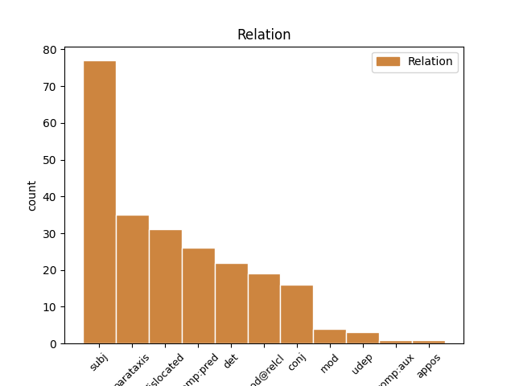
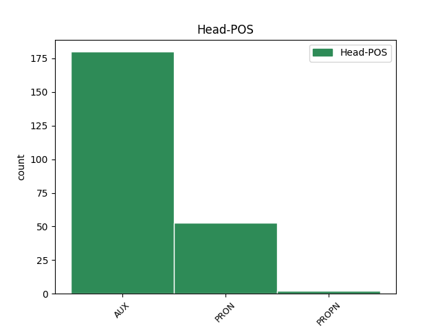
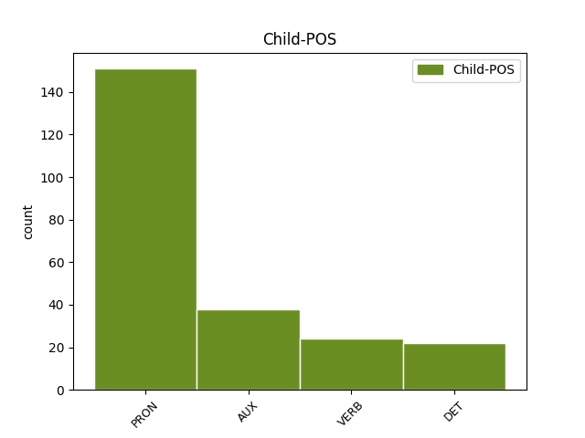

Distribution of features within this leaf



Agreement Rules sorted by frequency.
- When the dependent token is the subject(subj) of the head token, and the head token is AUX and the dependent token is PRON.
1 Jabet _ _ _ _ 0 _ _ _
2 mën _ _ _ _ 0 _ _ _
3 na _ _ _ _ 0 _ _ _
4 a _ _ _ _ 0 _ _ _
5 jàpp _ _ _ _ 0 _ _ _
6 siddit _ _ _ _ 0 _ _ _
7 yi _ _ _ _ 0 _ _ _
8 , _ _ _ _ 0 _ _ _
9 ba _ _ _ _ 0 _ _ _
10 ki bi PRON PRON Definite=Def|Deixis=Prox|NounClass=Wol1|Number=Sing|Person=3|PronType=Rel 13 subj _ _
11 mu _ _ _ _ 0 _ _ _
12 dal _ _ _ _ 0 _ _ _
13 dootul di AUX AUX Aspect=Imp|Mood=Ind|Number=Sing|Person=3|Polarity=Neg|Tense=Fut 0 _ _ _
14 am _ _ _ _ 0 _ _ _
15 yëg-yëg _ _ _ _ 0 _ _ _
16 ci _ _ _ _ 0 _ _ _
17 yaramam _ _ _ _ 0 _ _ _
18 , _ _ _ _ 0 _ _ _
19 maanaam _ _ _ _ 0 _ _ _
20 du _ _ _ _ 0 _ _ _
21 yëg _ _ _ _ 0 _ _ _
22 lu _ _ _ _ 0 _ _ _
23 tàng _ _ _ _ 0 _ _ _
24 mbaa _ _ _ _ 0 _ _ _
25 lu _ _ _ _ 0 _ _ _
26 sedd _ _ _ _ 0 _ _ _
27 . _ _ _ _ 0 _ _ _
1 Bu _ _ _ _ 0 _ _ _
2 ñaareel _ _ _ _ 0 _ _ _
3 bi _ _ _ _ 0 _ _ _
4 it _ _ _ _ 0 _ _ _
5 nag _ _ _ _ 0 _ _ _
6 moom _ _ _ _ 0 _ _ _
7 , _ _ _ _ 0 _ _ _
8 li bi PRON PRON Definite=Def|Deixis=Prox|NounClass=Wol7|Number=Sing|Person=3|PronType=Rel 17 dislocated _ _
9 tax _ _ _ _ 0 _ _ _
10 Muusaa _ _ _ _ 0 _ _ _
11 indee _ _ _ _ 0 _ _ _
12 ko _ _ _ _ 0 _ _ _
13 nii _ _ _ _ 0 _ _ _
14 , _ _ _ _ 0 _ _ _
15 mujjantal _ _ _ _ 0 _ _ _
16 ba _ _ _ _ 0 _ _ _
17 la la AUX INFL FocusType=Compl|Mood=Ind|Number=Sing|Person=3 0 _ _ _
18 di _ _ _ _ 0 _ _ _
19 dàkk _ _ _ _ 0 _ _ _
20 , _ _ _ _ 0 _ _ _
21 mu _ _ _ _ 0 _ _ _
22 di _ _ _ _ 0 _ _ _
23 baati _ _ _ _ 0 _ _ _
24 " _ _ _ _ 0 _ _ _
25 Asta _ _ _ _ 0 _ _ _
26 Waalo _ _ _ _ 0 _ _ _
27 " _ _ _ _ 0 _ _ _
28 . _ _ _ _ 0 _ _ _
1 Nit _ _ _ _ 0 _ _ _
2 ku _ _ _ _ 0 _ _ _
3 ne _ _ _ _ 0 _ _ _
4 , _ _ _ _ 0 _ _ _
5 ci _ _ _ _ 0 _ _ _
6 biir _ _ _ _ 0 _ _ _
7 réewam _ _ _ _ 0 _ _ _
8 , _ _ _ _ 0 _ _ _
9 am _ _ _ _ 0 _ _ _
10 na _ _ _ _ 0 _ _ _
11 sañ-sañu _ _ _ _ 0 _ _ _
12 bokk _ _ _ _ 0 _ _ _
13 ca _ _ _ _ 0 _ _ _
14 njiit _ _ _ _ 0 _ _ _
15 ya _ _ _ _ 0 _ _ _
16 di _ _ _ _ 0 _ _ _
17 saytu _ _ _ _ 0 _ _ _
18 doxalinu _ _ _ _ 0 _ _ _
19 réew _ _ _ _ 0 _ _ _
20 ma _ _ _ _ 0 _ _ _
21 , _ _ _ _ 0 _ _ _
22 mu _ _ _ _ 0 _ _ _
23 a _ _ _ _ 0 _ _ _
24 xam _ _ _ _ 0 _ _ _
25 moom moom PRON PRON Number=Sing|Person=3|PronType=Prs 28 comp:pred _ _
26 ci _ _ _ _ 0 _ _ _
27 boppam _ _ _ _ 0 _ _ _
28 la la AUX COP Mood=Ind|Number=Sing|Person=3|VerbForm=Fin 0 _ _ _
29 , _ _ _ _ 0 _ _ _
30 walla _ _ _ _ 0 _ _ _
31 mu _ _ _ _ 0 _ _ _
32 dénk _ _ _ _ 0 _ _ _
33 baatam _ _ _ _ 0 _ _ _
34 ay _ _ _ _ 0 _ _ _
35 ndaw _ _ _ _ 0 _ _ _
36 yu _ _ _ _ 0 _ _ _
37 mu _ _ _ _ 0 _ _ _
38 tànn _ _ _ _ 0 _ _ _
39 ci _ _ _ _ 0 _ _ _
40 coobareem _ _ _ _ 0 _ _ _
41 . _ _ _ _ 0 _ _ _
1 Amul _ _ _ _ 0 _ _ _
2 kenn _ _ _ _ 0 _ _ _
3 ku _ _ _ _ 0 _ _ _
4 ñu _ _ _ _ 0 _ _ _
5 war _ _ _ _ 0 _ _ _
6 gétén _ _ _ _ 0 _ _ _
7 ngir _ _ _ _ 0 _ _ _
8 i _ _ _ _ 0 _ _ _
9 xalaatam _ _ _ _ 0 _ _ _
10 , _ _ _ _ 0 _ _ _
11 doonte _ _ _ _ 0 _ _ _
12 sax _ _ _ _ 0 _ _ _
13 ci _ _ _ _ 0 _ _ _
14 wàllu _ _ _ _ 0 _ _ _
15 diine _ _ _ _ 0 _ _ _
16 la la AUX COP Mood=Ind|Number=Sing|Person=3|VerbForm=Fin 0 _ _ _
17 , _ _ _ _ 0 _ _ _
18 na na AUX INFL Aspect=Perf|Mood=Opt|Number=Sing|Person=3 16 parataxis _ _
19 fekk _ _ _ _ 0 _ _ _
20 rekk _ _ _ _ 0 _ _ _
21 seen _ _ _ _ 0 _ _ _
22 ag _ _ _ _ 0 _ _ _
23 génne _ _ _ _ 0 _ _ _
24 yàqul _ _ _ _ 0 _ _ _
25 dara _ _ _ _ 0 _ _ _
26 ci _ _ _ _ 0 _ _ _
27 jàmmu _ _ _ _ 0 _ _ _
28 nekkeel _ _ _ _ 0 _ _ _
29 ji _ _ _ _ 0 _ _ _
30 àtte _ _ _ _ 0 _ _ _
31 tëral _ _ _ _ 0 _ _ _
32 . _ _ _ _ 0 _ _ _
1 Su _ _ _ _ 0 _ _ _
2 nga _ _ _ _ 0 _ _ _
3 xàmmee _ _ _ _ 0 _ _ _
4 nag _ _ _ _ 0 _ _ _
5 ne _ _ _ _ 0 _ _ _
6 Maam _ _ _ _ 0 _ _ _
7 Asta _ _ _ _ 0 _ _ _
8 Waalo _ _ _ _ 0 _ _ _
9 mu _ _ _ _ 0 _ _ _
10 a _ _ _ _ 0 _ _ _
11 di _ _ _ _ 0 _ _ _
12 maami _ _ _ _ 0 _ _ _
13 Sëriñ _ _ _ _ 0 _ _ _
14 Tuubaa _ _ _ _ 0 _ _ _
15 , _ _ _ _ 0 _ _ _
16 nga _ _ _ _ 0 _ _ _
17 daldi _ _ _ _ 0 _ _ _
18 yëg _ _ _ _ 0 _ _ _
19 te _ _ _ _ 0 _ _ _
20 jàpp _ _ _ _ 0 _ _ _
21 ne _ _ _ _ 0 _ _ _
22 ndekete _ _ _ _ 0 _ _ _
23 riir _ _ _ _ 0 _ _ _
24 mi _ _ _ _ 0 _ _ _
25 ak _ _ _ _ 0 _ _ _
26 bari _ _ _ _ 0 _ _ _
27 gi _ _ _ _ 0 _ _ _
28 ak _ _ _ _ 0 _ _ _
29 xér _ _ _ _ 0 _ _ _
30 gi _ _ _ _ 0 _ _ _
31 , _ _ _ _ 0 _ _ _
32 lii bii PRON PRON Deixis=Prox|DeixisRef=1|NounClass=Wol7|Number=Sing|PronType=Dem 0 _ _ _
33 lépp bépp DET DET NounClass=Wol7|Number=Sing|PronType=Tot 32 det _ _
34 nammul _ _ _ _ 0 _ _ _
35 lu _ _ _ _ 0 _ _ _
36 dul _ _ _ _ 0 _ _ _
37 tàbbiji _ _ _ _ 0 _ _ _
38 ci _ _ _ _ 0 _ _ _
39 kiiraayu _ _ _ _ 0 _ _ _
40 Sëriñ _ _ _ _ 0 _ _ _
41 Tuubaa _ _ _ _ 0 _ _ _
42 . _ _ _ _ 0 _ _ _
1 Ñépp _ _ _ _ 0 _ _ _
2 am _ _ _ _ 0 _ _ _
3 nañu _ _ _ _ 0 _ _ _
4 sañ-sañ _ _ _ _ 0 _ _ _
5 ci _ _ _ _ 0 _ _ _
6 yem _ _ _ _ 0 _ _ _
7 añu _ _ _ _ 0 _ _ _
8 ab _ _ _ _ 0 _ _ _
9 liggéey _ _ _ _ 0 _ _ _
10 , _ _ _ _ 0 _ _ _
11 su _ _ _ _ 0 _ _ _
12 fekkee _ _ _ _ 0 _ _ _
13 ne _ _ _ _ 0 _ _ _
14 ñu _ _ _ _ 0 _ _ _
15 a _ _ _ _ 0 _ _ _
16 yem _ _ _ _ 0 _ _ _
17 liggéey _ _ _ _ 0 _ _ _
18 , _ _ _ _ 0 _ _ _
19 ci _ _ _ _ 0 _ _ _
20 lu bu PRON PRON NounClass=Wol7|Number=Sing|Person=3|PronType=Rel 0 _ _ _
21 àndul ànd VERB VERB Mood=Ind|Number=Sing|Person=3|Polarity=Neg|VerbForm=Fin 20 mod@relcl _ _
22 ak _ _ _ _ 0 _ _ _
23 benn _ _ _ _ 0 _ _ _
24 xàjjaatle _ _ _ _ 0 _ _ _
25 . _ _ _ _ 0 _ _ _
1 Jabet _ _ _ _ 0 _ _ _
2 mën _ _ _ _ 0 _ _ _
3 na _ _ _ _ 0 _ _ _
4 a _ _ _ _ 0 _ _ _
5 jàpp _ _ _ _ 0 _ _ _
6 siddit _ _ _ _ 0 _ _ _
7 yi _ _ _ _ 0 _ _ _
8 , _ _ _ _ 0 _ _ _
9 ba _ _ _ _ 0 _ _ _
10 ki _ _ _ _ 0 _ _ _
11 mu _ _ _ _ 0 _ _ _
12 dal _ _ _ _ 0 _ _ _
13 dootul _ _ _ _ 0 _ _ _
14 am _ _ _ _ 0 _ _ _
15 yëg-yëg _ _ _ _ 0 _ _ _
16 ci _ _ _ _ 0 _ _ _
17 yaramam _ _ _ _ 0 _ _ _
18 , _ _ _ _ 0 _ _ _
19 maanaam _ _ _ _ 0 _ _ _
20 du _ _ _ _ 0 _ _ _
21 yëg _ _ _ _ 0 _ _ _
22 lu bu PRON PRON NounClass=Wol7|Number=Sing|Person=3|PronType=Rel 0 _ _ _
23 tàng _ _ _ _ 0 _ _ _
24 mbaa _ _ _ _ 0 _ _ _
25 lu bu PRON PRON NounClass=Wol7|Number=Sing|Person=3|PronType=Rel 22 conj _ _
26 sedd _ _ _ _ 0 _ _ _
27 . _ _ _ _ 0 _ _ _
1 Te _ _ _ _ 0 _ _ _
2 itam _ _ _ _ 0 _ _ _
3 mën _ _ _ _ 0 _ _ _
4 na na AUX INFL Aspect=Perf|Mood=Ind|Number=Sing|Person=3 0 _ _ _
5 a _ _ _ _ 0 _ _ _
6 meli _ _ _ _ 0 _ _ _
7 bés _ _ _ _ 0 _ _ _
8 ni _ _ _ _ 0 _ _ _
9 mag _ _ _ _ 0 _ _ _
10 ñi _ _ _ _ 0 _ _ _
11 soloolul solool VERB VERB Mood=Ind|Number=Sing|Person=3|Polarity=Neg|VerbForm=Fin 4 parataxis _ _
12 leneen _ _ _ _ 0 _ _ _
13 lu _ _ _ _ 0 _ _ _
14 moy _ _ _ _ 0 _ _ _
15 ay _ _ _ _ 0 _ _ _
16 lim _ _ _ _ 0 _ _ _
17 . _ _ _ _ 0 _ _ _
1 Amul _ _ _ _ 0 _ _ _
2 kenn benn PRON PRON NounClass=Wol1|Number=Sing|PronType=Ind,Neg 0 _ _ _
3 ku _ _ _ _ 0 _ _ _
4 , _ _ _ _ 0 _ _ _
5 mënees _ _ _ _ 0 _ _ _
6 na na AUX INFL Aspect=Perf|Mood=Ind|Number=Sing|Person=3 2 mod@relcl _ _
7 ko _ _ _ _ 0 _ _ _
8 jàpp _ _ _ _ 0 _ _ _
9 , _ _ _ _ 0 _ _ _
10 walla _ _ _ _ 0 _ _ _
11 téj _ _ _ _ 0 _ _ _
12 , _ _ _ _ 0 _ _ _
13 walla _ _ _ _ 0 _ _ _
14 gàddaayloo _ _ _ _ 0 _ _ _
15 , _ _ _ _ 0 _ _ _
16 ci _ _ _ _ 0 _ _ _
17 lu _ _ _ _ 0 _ _ _
18 teguwul _ _ _ _ 0 _ _ _
19 fenn _ _ _ _ 0 _ _ _
20 . _ _ _ _ 0 _ _ _
1 Gannaaw _ _ _ _ 0 _ _ _
2 nit _ _ _ _ 0 _ _ _
3 ku _ _ _ _ 0 _ _ _
4 mu _ _ _ _ 0 _ _ _
5 , _ _ _ _ 0 _ _ _
6 jortees _ _ _ _ 0 _ _ _
7 na na AUX INFL Aspect=Perf|Mood=Ind|Number=Sing|Person=3 50 mod _ _
8 ne _ _ _ _ 0 _ _ _
9 set _ _ _ _ 0 _ _ _
10 na _ _ _ _ 0 _ _ _
11 ci _ _ _ _ 0 _ _ _
12 ag _ _ _ _ 0 _ _ _
13 tooñeel _ _ _ _ 0 _ _ _
14 ba _ _ _ _ 0 _ _ _
15 keroog _ _ _ _ 0 _ _ _
16 ba _ _ _ _ 0 _ _ _
17 ñu _ _ _ _ 0 _ _ _
18 di _ _ _ _ 0 _ _ _
19 biral _ _ _ _ 0 _ _ _
20 ne _ _ _ _ 0 _ _ _
21 tooñ _ _ _ _ 0 _ _ _
22 na _ _ _ _ 0 _ _ _
23 , _ _ _ _ 0 _ _ _
24 su _ _ _ _ 0 _ _ _
25 fekkee _ _ _ _ 0 _ _ _
26 ne _ _ _ _ 0 _ _ _
27 gisees _ _ _ _ 0 _ _ _
28 na _ _ _ _ 0 _ _ _
29 ne _ _ _ _ 0 _ _ _
30 mëneesu _ _ _ _ 0 _ _ _
31 ko _ _ _ _ 0 _ _ _
32 bañ _ _ _ _ 0 _ _ _
33 a _ _ _ _ 0 _ _ _
34 jàpp _ _ _ _ 0 _ _ _
35 , _ _ _ _ 0 _ _ _
36 gépp _ _ _ _ 0 _ _ _
37 teeŋal _ _ _ _ 0 _ _ _
38 gu _ _ _ _ 0 _ _ _
39 dul _ _ _ _ 0 _ _ _
40 gi _ _ _ _ 0 _ _ _
41 ci _ _ _ _ 0 _ _ _
42 yell _ _ _ _ 0 _ _ _
43 ngir _ _ _ _ 0 _ _ _
44 jot _ _ _ _ 0 _ _ _
45 ci _ _ _ _ 0 _ _ _
46 jëmmam _ _ _ _ 0 _ _ _
47 , _ _ _ _ 0 _ _ _
48 yoon _ _ _ _ 0 _ _ _
49 war _ _ _ _ 0 _ _ _
50 na na AUX INFL Aspect=Perf|Mood=Ind|Number=Sing|Person=3 0 _ _ _
51 ko _ _ _ _ 0 _ _ _
52 daan _ _ _ _ 0 _ _ _
53 daan _ _ _ _ 0 _ _ _
54 yu _ _ _ _ 0 _ _ _
55 tar _ _ _ _ 0 _ _ _
56 . _ _ _ _ 0 _ _ _
1 Ku _ _ _ _ 0 _ _ _
2 mel _ _ _ _ 0 _ _ _
3 ni _ _ _ _ 0 _ _ _
4 Muusaa _ _ _ _ 0 _ _ _
5 Ka _ _ _ _ 0 _ _ _
6 , _ _ _ _ 0 _ _ _
7 ba _ _ _ _ 0 _ _ _
8 mu _ _ _ _ 0 _ _ _
9 bëggee _ _ _ _ 0 _ _ _
10 wone _ _ _ _ 0 _ _ _
11 màggaayu _ _ _ _ 0 _ _ _
12 Boroom _ _ _ _ 0 _ _ _
13 Tuubaa _ _ _ _ 0 _ _ _
14 , _ _ _ _ 0 _ _ _
15 te _ _ _ _ 0 _ _ _
16 it _ _ _ _ 0 _ _ _
17 wonewaale _ _ _ _ 0 _ _ _
18 ni _ _ _ _ 0 _ _ _
19 mu _ _ _ _ 0 _ _ _
20 fekke _ _ _ _ 0 _ _ _
21 woon _ _ _ _ 0 _ _ _
22 diine _ _ _ _ 0 _ _ _
23 ràgg _ _ _ _ 0 _ _ _
24 , _ _ _ _ 0 _ _ _
25 mu _ _ _ _ 0 _ _ _
26 jël _ _ _ _ 0 _ _ _
27 ko _ _ _ _ 0 _ _ _
28 ragg _ _ _ _ 0 _ _ _
29 ko _ _ _ _ 0 _ _ _
30 ba _ _ _ _ 0 _ _ _
31 mu _ _ _ _ 0 _ _ _
32 set _ _ _ _ 0 _ _ _
33 , _ _ _ _ 0 _ _ _
34 teg _ _ _ _ 0 _ _ _
35 ci _ _ _ _ 0 _ _ _
36 kanami _ _ _ _ 0 _ _ _
37 doom _ _ _ _ 0 _ _ _
38 Aadama _ _ _ _ 0 _ _ _
39 , _ _ _ _ 0 _ _ _
40 ak _ _ _ _ 0 _ _ _
41 nag _ _ _ _ 0 _ _ _
42 wone _ _ _ _ 0 _ _ _
43 ni _ _ _ _ 0 _ _ _
44 nit _ _ _ _ 0 _ _ _
45 ñi _ _ _ _ 0 _ _ _
46 daan _ _ _ _ 0 _ _ _
47 def _ _ _ _ 0 _ _ _
48 ndiiraan _ _ _ _ 0 _ _ _
49 di _ _ _ _ 0 _ _ _
50 fëx _ _ _ _ 0 _ _ _
51 wutalsi _ _ _ _ 0 _ _ _
52 Sëriñ _ _ _ _ 0 _ _ _
53 bi _ _ _ _ 0 _ _ _
54 , _ _ _ _ 0 _ _ _
55 ngir _ _ _ _ 0 _ _ _
56 di _ _ _ _ 0 _ _ _
57 wut _ _ _ _ 0 _ _ _
58 Yàlla _ _ _ _ 0 _ _ _
59 ak _ _ _ _ 0 _ _ _
60 Yonentam Yonent PROPN NAME Number=Sing|Poss=Yes 0 _ _ _
61 bu _ _ _ _ 0 _ _ _
62 tedd _ _ _ _ 0 _ _ _
63 ba bi DET DET Definite=Def|Deixis=Remt|NounClass=Wol5|Number=Sing|PronType=Art 60 det _ SpaceAfter=No
64 . _ _ _ _ 0 _ _ _
1 Du di AUX COP Aspect=Imp|Mood=Ind|Number=Sing|Person=3|Polarity=Neg|Tense=Pres|VerbForm=Fin 0 _ _ _
2 lu _ _ _ _ 0 _ _ _
3 ñu _ _ _ _ 0 _ _ _
4 fi _ _ _ _ 0 _ _ _
5 di _ _ _ _ 0 _ _ _
6 doxal _ _ _ _ 0 _ _ _
7 mbaa _ _ _ _ 0 _ _ _
8 àtteb _ _ _ _ 0 _ _ _
9 jeneen _ _ _ _ 0 _ _ _
10 diine _ _ _ _ 0 _ _ _
11 , _ _ _ _ 0 _ _ _
12 waaye _ _ _ _ 0 _ _ _
13 lépp _ _ _ _ 0 _ _ _
14 lu _ _ _ _ 0 _ _ _
15 ñu _ _ _ _ 0 _ _ _
16 di _ _ _ _ 0 _ _ _
17 def _ _ _ _ 0 _ _ _
18 warees _ _ _ _ 0 _ _ _
19 na na AUX INFL Aspect=Perf|Mood=Ind|Number=Sing|Person=3 1 conj _ _
20 ko _ _ _ _ 0 _ _ _
21 a _ _ _ _ 0 _ _ _
22 xool _ _ _ _ 0 _ _ _
23 ba _ _ _ _ 0 _ _ _
24 xam _ _ _ _ 0 _ _ _
25 gaañul _ _ _ _ 0 _ _ _
26 jenn _ _ _ _ 0 _ _ _
27 ci _ _ _ _ 0 _ _ _
28 diine _ _ _ _ 0 _ _ _
29 yooyu _ _ _ _ 0 _ _ _
30 . _ _ _ _ 0 _ _ _
1 Dina di AUX AUX Aspect=Imp|Mood=Ind|Number=Sing|Person=3|Tense=Fut 0 _ _ _
2 def _ _ _ _ 0 _ _ _
3 lu bu PRON PRON NounClass=Wol7|Number=Sing|Person=3|PronType=Rel 1 udep _ _
4 yágg _ _ _ _ 0 _ _ _
5 ci _ _ _ _ 0 _ _ _
6 ay _ _ _ _ 0 _ _ _
7 at _ _ _ _ 0 _ _ _
8 balaa _ _ _ _ 0 _ _ _
9 lees _ _ _ _ 0 _ _ _
10 ko _ _ _ _ 0 _ _ _
11 mën _ _ _ _ 0 _ _ _
12 a _ _ _ _ 0 _ _ _
13 jàngal _ _ _ _ 0 _ _ _
14 lenn _ _ _ _ 0 _ _ _
15 lu _ _ _ _ 0 _ _ _
16 am _ _ _ _ 0 _ _ _
17 solo _ _ _ _ 0 _ _ _
18 ci _ _ _ _ 0 _ _ _
19 Nasaraan _ _ _ _ 0 _ _ _
20 . _ _ _ _ 0 _ _ _
1 Yàlla _ _ _ _ 0 _ _ _
2 nee _ _ _ _ 0 _ _ _
3 na na AUX INFL Aspect=Perf|Mood=Ind|Number=Sing|Person=3 0 _ _ _
4 ci _ _ _ _ 0 _ _ _
5 Alxuraan _ _ _ _ 0 _ _ _
6 ( _ _ _ _ 0 _ _ _
7 lu bu PRON PRON NounClass=Wol7|Number=Sing|Person=3|PronType=Rel 3 parataxis _ _
8 nu _ _ _ _ 0 _ _ _
9 ci _ _ _ _ 0 _ _ _
10 dégge _ _ _ _ 0 _ _ _
11 ) _ _ _ _ 0 _ _ _
12 : _ _ _ _ 0 _ _ _
13 Yàlla _ _ _ _ 0 _ _ _
14 amul _ _ _ _ 0 _ _ _
15 soxla _ _ _ _ 0 _ _ _
16 ci _ _ _ _ 0 _ _ _
17 yàpp _ _ _ _ 0 _ _ _
18 wi _ _ _ _ 0 _ _ _
19 walla _ _ _ _ 0 _ _ _
20 dereet _ _ _ _ 0 _ _ _
21 ji _ _ _ _ 0 _ _ _
22 ; _ _ _ _ 0 _ _ _
23 waaye _ _ _ _ 0 _ _ _
24 la _ _ _ _ 0 _ _ _
25 ko _ _ _ _ 0 _ _ _
26 ca _ _ _ _ 0 _ _ _
27 soxal _ _ _ _ 0 _ _ _
28 mu _ _ _ _ 0 _ _ _
29 a _ _ _ _ 0 _ _ _
30 di _ _ _ _ 0 _ _ _
31 ragal _ _ _ _ 0 _ _ _
32 Yàlla _ _ _ _ 0 _ _ _
33 gu _ _ _ _ 0 _ _ _
34 bawoo _ _ _ _ 0 _ _ _
35 ci _ _ _ _ 0 _ _ _
36 yeen _ _ _ _ 0 _ _ _
37 . _ _ _ _ 0 _ _ _
1 Seetlu _ _ _ _ 0 _ _ _
2 naa na AUX INFL Aspect=Perf|Mood=Ind|Number=Sing|Person=1 0 _ _ _
3 leen _ _ _ _ 0 _ _ _
4 it _ _ _ _ 0 _ _ _
5 bu bu PRON PRON NounClass=Wol5|Number=Sing|Person=3|PronType=Rel 2 mod _ _
6 baax _ _ _ _ 0 _ _ _
7 , _ _ _ _ 0 _ _ _
8 wante _ _ _ _ 0 _ _ _
9 loolu _ _ _ _ 0 _ _ _
10 soppiwul _ _ _ _ 0 _ _ _
11 , _ _ _ _ 0 _ _ _
12 gën _ _ _ _ 0 _ _ _
13 a _ _ _ _ 0 _ _ _
14 rafetal _ _ _ _ 0 _ _ _
15 sama _ _ _ _ 0 _ _ _
16 xalaat _ _ _ _ 0 _ _ _
17 ci _ _ _ _ 0 _ _ _
18 ñoom _ _ _ _ 0 _ _ _
19 . _ _ _ _ 0 _ _ _
1 Su _ _ _ _ 0 _ _ _
2 ko _ _ _ _ 0 _ _ _
3 defee _ _ _ _ 0 _ _ _
4 mag _ _ _ _ 0 _ _ _
5 moomu _ _ _ _ 0 _ _ _
6 da _ _ _ _ 0 _ _ _
7 mu _ _ _ _ 0 _ _ _
8 daan _ _ _ _ 0 _ _ _
9 bég _ _ _ _ 0 _ _ _
10 ci _ _ _ _ 0 _ _ _
11 lu _ _ _ _ 0 _ _ _
12 mu _ _ _ _ 0 _ _ _
13 daje _ _ _ _ 0 _ _ _
14 ak _ _ _ _ 0 _ _ _
15 ku bu PRON PRON NounClass=Wol1|Number=Sing|Person=3|PronType=Rel 0 _ _ _
16 ni _ _ _ _ 0 _ _ _
17 mel _ _ _ _ 0 _ _ _
18 , _ _ _ _ 0 _ _ _
19 ku bu PRON PRON NounClass=Wol1|Number=Sing|Person=3|PronType=Rel 15 appos _ _
20 yembee _ _ _ _ 0 _ _ _
21 noonu _ _ _ _ 0 _ _ _
22 . _ _ _ _ 0 _ _ _
1 Doonkon di AUX AUX Aspect=Imp|Mood=Cnd|Number=Sing|Person=3|Tense=Past 0 _ _ _
2 naa na AUX INFL Number=Sing|Person=1 1 comp:aux _ _
3 leen _ _ _ _ 0 _ _ _
4 a _ _ _ _ 0 _ _ _
5 wax _ _ _ _ 0 _ _ _
6 ne _ _ _ _ 0 _ _ _
7 : _ _ _ _ 0 _ _ _
8 " _ _ _ _ 0 _ _ _
9 Amoon _ _ _ _ 0 _ _ _
10 na _ _ _ _ 0 _ _ _
11 fi _ _ _ _ 0 _ _ _
12 as _ _ _ _ 0 _ _ _
13 doomi-buur _ _ _ _ 0 _ _ _
14 su _ _ _ _ 0 _ _ _
15 dëkkoon _ _ _ _ 0 _ _ _
16 ci _ _ _ _ 0 _ _ _
17 ab _ _ _ _ 0 _ _ _
18 palanet _ _ _ _ 0 _ _ _
19 bu _ _ _ _ 0 _ _ _
20 nga _ _ _ _ 0 _ _ _
21 xam _ _ _ _ 0 _ _ _
22 ne _ _ _ _ 0 _ _ _
23 daanaka _ _ _ _ 0 _ _ _
24 li _ _ _ _ 0 _ _ _
25 mu _ _ _ _ 0 _ _ _
26 ko _ _ _ _ 0 _ _ _
27 ëppee _ _ _ _ 0 _ _ _
28 woon _ _ _ _ 0 _ _ _
29 moom _ _ _ _ 0 _ _ _
30 ci _ _ _ _ 0 _ _ _
31 boppam _ _ _ _ 0 _ _ _
32 bariwuloon _ _ _ _ 0 _ _ _
33 , _ _ _ _ 0 _ _ _
34 bu _ _ _ _ 0 _ _ _
35 bëggoon _ _ _ _ 0 _ _ _
36 a _ _ _ _ 0 _ _ _
37 am _ _ _ _ 0 _ _ _
38 ab _ _ _ _ 0 _ _ _
39 xarit _ _ _ _ 0 _ _ _
40 ... _ _ _ _ 0 _ _ _
41 » _ _ _ _ 0 _ _ _
42 . _ _ _ _ 0 _ _ _
1 Garab _ _ _ _ 0 _ _ _
2 la la AUX COP Mood=Ind|Number=Sing|Person=3|VerbForm=Fin 11 comp:pred _ _
3 itam _ _ _ _ 0 _ _ _
4 gu _ _ _ _ 0 _ _ _
5 nga _ _ _ _ 0 _ _ _
6 xam _ _ _ _ 0 _ _ _
7 gu _ _ _ _ 0 _ _ _
8 yomb _ _ _ _ 0 _ _ _
9 ay _ _ _ _ 0 _ _ _
10 mbir _ _ _ _ 0 _ _ _
11 la la AUX COP Mood=Ind|Number=Sing|Person=3|VerbForm=Fin 0 _ _ _
12 , _ _ _ _ 0 _ _ _
13 ndax _ _ _ _ 0 _ _ _
14 daanaka _ _ _ _ 0 _ _ _
15 lajul _ _ _ _ 0 _ _ _
16 ndox _ _ _ _ 0 _ _ _
17 , _ _ _ _ 0 _ _ _
18 fépp _ _ _ _ 0 _ _ _
19 la _ _ _ _ 0 _ _ _
20 mën _ _ _ _ 0 _ _ _
21 a _ _ _ _ 0 _ _ _
22 sax _ _ _ _ 0 _ _ _
23 . _ _ _ _ 0 _ _ _
1 Te _ _ _ _ 0 _ _ _
2 sax _ _ _ _ 0 _ _ _
3 ni _ _ _ _ 0 _ _ _
4 ko _ _ _ _ 0 _ _ _
5 Wolof _ _ _ _ 0 _ _ _
6 Njaay _ _ _ _ 0 _ _ _
7 di _ _ _ _ 0 _ _ _
8 waxe _ _ _ _ 0 _ _ _
9 , _ _ _ _ 0 _ _ _
10 " _ _ _ _ 0 _ _ _
11 man _ _ _ _ 0 _ _ _
12 la la AUX COP Mood=Ind|Number=Sing|Person=3|VerbForm=Fin 22 subj _ SpaceAfter=No
13 , _ _ _ _ 0 _ _ _
14 man _ _ _ _ 0 _ _ _
15 la _ _ _ _ 0 _ _ _
16 " _ _ _ _ 0 _ _ _
17 ju _ _ _ _ 0 _ _ _
18 nga _ _ _ _ 0 _ _ _
19 gis _ _ _ _ 0 _ _ _
20 ñaare _ _ _ _ 0 _ _ _
21 , _ _ _ _ 0 _ _ _
22 du di AUX COP Aspect=Imp|Mood=Ind|Number=Sing|Person=3|Polarity=Neg|Tense=Pres|VerbForm=Fin 0 _ _ _
23 moom _ _ _ _ 0 _ _ _
24 ! _ _ _ _ 0 _ _ _
1 Te _ _ _ _ 0 _ _ _
2 sax _ _ _ _ 0 _ _ _
3 ni _ _ _ _ 0 _ _ _
4 ko _ _ _ _ 0 _ _ _
5 Wolof _ _ _ _ 0 _ _ _
6 Njaay _ _ _ _ 0 _ _ _
7 di _ _ _ _ 0 _ _ _
8 waxe _ _ _ _ 0 _ _ _
9 , _ _ _ _ 0 _ _ _
10 " _ _ _ _ 0 _ _ _
11 man moom PRON PRON Number=Sing|Person=1|PronType=Prs 0 _ _ _
12 la _ _ _ _ 0 _ _ _
13 , _ _ _ _ 0 _ _ _
14 man _ _ _ _ 0 _ _ _
15 la la AUX COP Mood=Ind|Number=Sing|Person=3|VerbForm=Fin 11 conj _ SpaceAfter=No
16 " _ _ _ _ 0 _ _ _
17 ju _ _ _ _ 0 _ _ _
18 nga _ _ _ _ 0 _ _ _
19 gis _ _ _ _ 0 _ _ _
20 ñaare _ _ _ _ 0 _ _ _
21 , _ _ _ _ 0 _ _ _
22 du _ _ _ _ 0 _ _ _
23 moom _ _ _ _ 0 _ _ _
24 ! _ _ _ _ 0 _ _ _
Disagree Examples:
1 Kon _ _ _ _ 0 _ _ _
2 ñooñu boobu PRON PRON Deixis=Prox|DeixisRef=2|NounClass=Wol2|Number=Plur|PronType=Dem 10 subj _ _
3 mujj _ _ _ _ 0 _ _ _
4 nekk _ _ _ _ 0 _ _ _
5 Dammeel _ _ _ _ 0 _ _ _
6 Kajoor _ _ _ _ 0 _ _ _
7 , _ _ _ _ 0 _ _ _
8 ay _ _ _ _ 0 _ _ _
9 doxandéem _ _ _ _ 0 _ _ _
10 lañu la AUX COP Mood=Ind|Number=Sing|Person=3|VerbForm=Fin 0 _ _ _
11 yu _ _ _ _ 0 _ _ _
12 nekkoon _ _ _ _ 0 _ _ _
13 ca _ _ _ _ 0 _ _ _
14 réew _ _ _ _ 0 _ _ _
15 moomu _ _ _ _ 0 _ _ _
16 ca _ _ _ _ 0 _ _ _
17 njëlbéen _ _ _ _ 0 _ _ _
18 . _ _ _ _ 0 _ _ _
1 Bu bu PRON PRON NounClass=Wol5|Number=Sing|Person=3|PronType=Rel 4 dislocated _ _
2 njëkk _ _ _ _ 0 _ _ _
3 bi _ _ _ _ 0 _ _ _
4 dinañu di AUX AUX Aspect=Imp|Mood=Ind|Number=Plur|Person=3|Tense=Fut 0 _ _ _
5 ko _ _ _ _ 0 _ _ _
6 wax _ _ _ _ 0 _ _ _
7 itam _ _ _ _ 0 _ _ _
8 " _ _ _ _ 0 _ _ _
9 jataayu _ _ _ _ 0 _ _ _
10 mag _ _ _ _ 0 _ _ _
11 ñi _ _ _ _ 0 _ _ _
12 " _ _ _ _ 0 _ _ _
13 . _ _ _ _ 0 _ _ _
1 Lu bu PRON PRON NounClass=Wol7|Number=Sing|Person=3|PronType=Rel 10 dislocated _ _
2 mel _ _ _ _ 0 _ _ _
3 ni _ _ _ _ 0 _ _ _
4 Senegaal _ _ _ _ 0 _ _ _
5 ak _ _ _ _ 0 _ _ _
6 Gaambi _ _ _ _ 0 _ _ _
7 ak _ _ _ _ 0 _ _ _
8 Faleme _ _ _ _ 0 _ _ _
9 nekkoon _ _ _ _ 0 _ _ _
10 nañu na AUX INFL Aspect=Perf|Mood=Ind|Number=Plur|Person=3 0 _ _ _
11 ci _ _ _ _ 0 _ _ _
12 suufu _ _ _ _ 0 _ _ _
13 Jolof _ _ _ _ 0 _ _ _
14 gu _ _ _ _ 0 _ _ _
15 mag _ _ _ _ 0 _ _ _
16 ga _ _ _ _ 0 _ _ _
17 . _ _ _ _ 0 _ _ _
1 Loolu _ _ _ _ 0 _ _ _
2 mu _ _ _ _ 0 _ _ _
3 a _ _ _ _ 0 _ _ _
4 di _ _ _ _ 0 _ _ _
5 li _ _ _ _ 0 _ _ _
6 xeltukatu _ _ _ _ 0 _ _ _
7 Almaañ _ _ _ _ 0 _ _ _
8 bi _ _ _ _ 0 _ _ _
9 ( _ _ _ _ 0 _ _ _
10 Hegel _ _ _ _ 0 _ _ _
11 ) _ _ _ _ 0 _ _ _
12 daan _ _ _ _ 0 _ _ _
13 sàkku _ _ _ _ 0 _ _ _
14 , _ _ _ _ 0 _ _ _
15 te _ _ _ _ 0 _ _ _
16 daan _ _ _ _ 0 _ _ _
17 ko _ _ _ _ 0 _ _ _
18 woote _ _ _ _ 0 _ _ _
19 , _ _ _ _ 0 _ _ _
20 moom moom PRON PRON Number=Sing|Person=3|PronType=Prs 0 _ _ _
21 ak _ _ _ _ 0 _ _ _
22 ñeneen beneen PRON PRON NounClass=Wol2|Number=Plur|PronType=Ind 20 conj _ _
23 ñi _ _ _ _ 0 _ _ _
24 daan _ _ _ _ 0 _ _ _
25 jam _ _ _ _ 0 _ _ _
26 bennoo _ _ _ _ 0 _ _ _
27 gii _ _ _ _ 0 _ _ _
28 nga _ _ _ _ 0 _ _ _
29 xam _ _ _ _ 0 _ _ _
30 ne _ _ _ _ 0 _ _ _
31 Otris _ _ _ _ 0 _ _ _
32 a _ _ _ _ 0 _ _ _
33 ko _ _ _ _ 0 _ _ _
34 moomoon _ _ _ _ 0 _ _ _
35 daanaka _ _ _ _ 0 _ _ _
36 , _ _ _ _ 0 _ _ _
37 te _ _ _ _ 0 _ _ _
38 tegoon _ _ _ _ 0 _ _ _
39 ko _ _ _ _ 0 _ _ _
40 loxo _ _ _ _ 0 _ _ _
41 . _ _ _ _ 0 _ _ _
1 Yonent _ _ _ _ 0 _ _ _
2 bi _ _ _ _ 0 _ _ _
3 ( _ _ _ _ 0 _ _ _
4 Yalla _ _ _ _ 0 _ _ _
5 na _ _ _ _ 0 _ _ _
6 jàmmi _ _ _ _ 0 _ _ _
7 Yàlla _ _ _ _ 0 _ _ _
8 nekk _ _ _ _ 0 _ _ _
9 ci _ _ _ _ 0 _ _ _
10 moom _ _ _ _ 0 _ _ _
11 ) _ _ _ _ 0 _ _ _
12 nee _ _ _ _ 0 _ _ _
13 na na AUX INFL Aspect=Perf|Mood=Ind|Number=Sing|Person=3 0 _ _ _
14 : _ _ _ _ 0 _ _ _
15 Sellal-leen sellal VERB VERB Mood=Imp|Number=Plur|Person=2|VerbForm=Fin 13 parataxis _ _
16 seen _ _ _ _ 0 _ _ _
17 i _ _ _ _ 0 _ _ _
18 jëf _ _ _ _ 0 _ _ _
19 ngir _ _ _ _ 0 _ _ _
20 Yàlla _ _ _ _ 0 _ _ _
21 kat _ _ _ _ 0 _ _ _
22 du _ _ _ _ 0 _ _ _
23 nangu _ _ _ _ 0 _ _ _
24 lu _ _ _ _ 0 _ _ _
25 dul _ _ _ _ 0 _ _ _
26 lu _ _ _ _ 0 _ _ _
27 ñu _ _ _ _ 0 _ _ _
28 sellal _ _ _ _ 0 _ _ _
29 ngir _ _ _ _ 0 _ _ _
30 moom _ _ _ _ 0 _ _ _
31 . _ _ _ _ 0 _ _ _